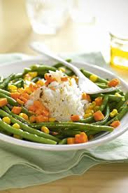
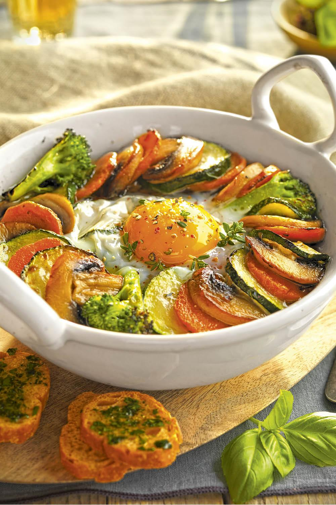
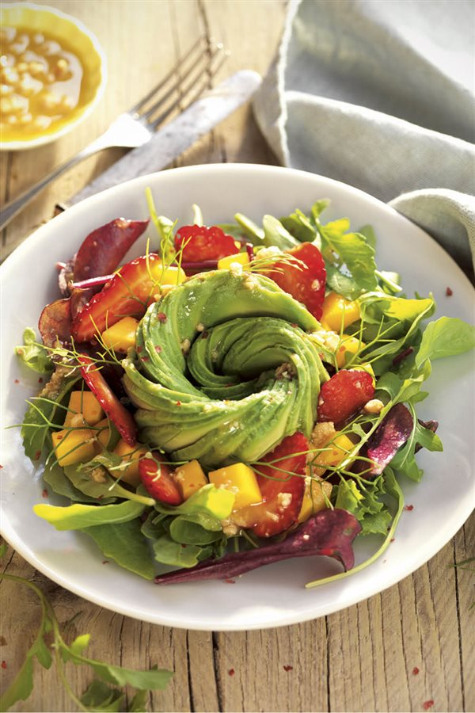
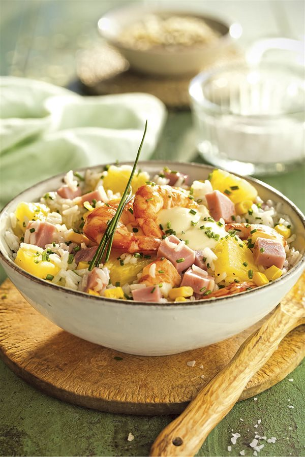
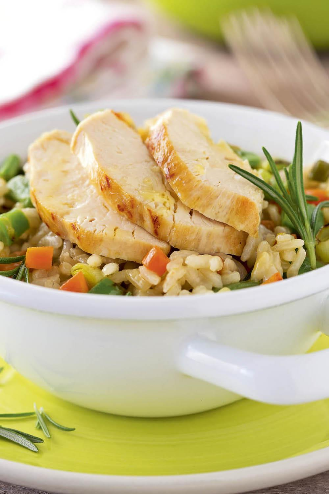
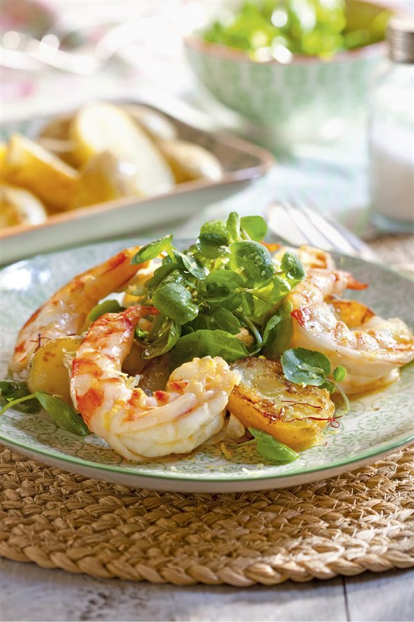
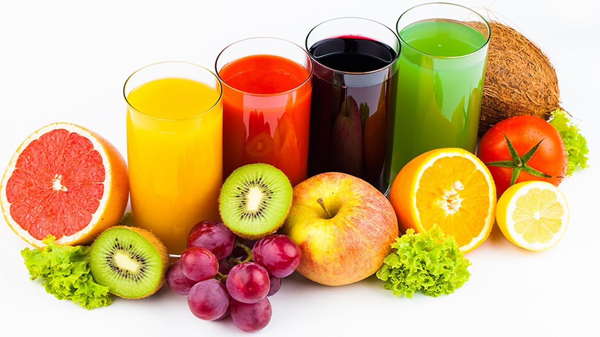

Cocinando
El bloc de los amantes de la gastronomia
Favorito






- Ensladas
- Sopa de mani
- Asados
- Comida rapida
Historial:
Pasta Artesanal
04-02-2019

Oh mamma, quanto è buona la pasta! Junto con el pan la pasta es una de las cosas que más me gusta hacer. Hace ya casi 10 años que vivo en Italia y no me canso, literalmente, de prepararla y de comerla. Obviamente, aquí en Italia la pasta es una institución, no pasan más de dos días sin probarla. Como en mi casa cuando uno no sabía qué hacer y se preparaban patatas fritas con huevo, aquí en Italia la opción es siempre un plato de pasta, simple, con il pomodoro. Hacerla en casa requiere mucho menos tiempo del que podemos imaginar y si preparamos una buena cantidad es posible congelarla para tenerla, de este modo, siempre lista para cocinar.
-
 Nelida2019: Que gran pagina carnal esta super
Nelida2019: Que gran pagina carnal esta super - Gabriel69: que bueno que te gusto
- Batman: Soy Batman
Los mejores Jugos naturales
2-05-2019

La mejor forma de sentirse bien es viviendo una vida sana, para ello debemos escoger siempre una alimentación que favorezca al organismo en sus funciones diarias. Como bien sabemos, cada parte del cuerpo es importante y beber jugos para limpiar el estómago puede ayudar a tener un vientre más deshinchado, como también sirve para que el mismo comience a funcionar correctamente. Siempre se recomienda unir una dieta balanceada a los batidos o jugos para limpiar el estómago con un ejercicio diario que sea de
- Nelida: holas alguien?